קאפיטל 14
דרייוו-מאודס און פירן דעם קאר
זייטן 223–246 אינעם PDF
אנצינדן און אפשטעלן דעם מאטאר
יעדע פארט הייבט זיך אן ווען דער קאר שטייט געפארקט און דער מאטאר איז אויסגעלאשן. דער אונער'ס מאנואל שרייבט אז דער ערשטער שריט איז זיך פארזיכערן אז דער פארקינג ברעמז איז אנגעצויגן. ביי דער EX איז דאס דער עלעקטרישער פארקינג ברעמז שאלטער אויף דער מיטלסטער קאנסאל. ווען איר ציט ארויף דעם שאלטער, צינדט זיך אן דאס רויטע ליכטל פון פארקינג ברעמז און ברעמז סיסטעם אינעם מיטער, אויף 30 סעקונדעס. דאס רויטע ליכט באשטעטיגט אז די הינטערשטע ברעמזן האלטן דעם קאר. מאכט א מנהג עס צו טשעקן פאר אלעם אנדערש, בפרט אויף א גאס וואס גייט ארויף אדער אראפ.
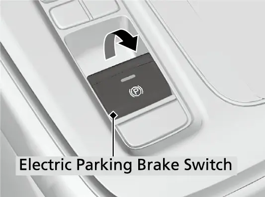
דערנאך טשעקט אז די טראנסמישן איז אין P (Park, פארקן) און דריקט שטארק אויפן ברעמז פעדאל. דער מאנואל שרייבט אז טעכניש קען מען אנצינדן דעם קאר אויך אין N (Neutral, ניוטראל), אבער אנצינדן אין P איז זיכערער. האלט אייער רעכטן פוס שטארק אויפן ברעמז די גאנצע צייט וואס דער מאטאר צינדט זיך אן. אויב דער שיפט שטייט נישט וואו איר מיינט, וועט דער קאר פארט נישט קענען פארן.
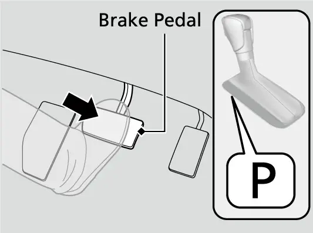
יעצט דריקט איינמאל דעם ENGINE START/STOP קנעפל (דער קנעפל צו אנצינדן און אפשטעלן דעם מאטאר), אן אנרירן דעם גאז פעדאל. נישט דריקן און האלטן. אויב דער מאטאר צינדט זיך נישט אן, ווארט כאטש 30 סעקונדעס איידער איר פרובירט נאכאמאל.
אנצינדן אין שווערע באדינגונגען
דער מאטאר צינדט זיך שווערער אן אין קאלטן וועטער און אין די דינערע לופט העכער 8,000 פיס (2,400 מעטער). אין קאלטן וועטער לעשט אויס עלעקטרישע זאכן ווי די לייכטן, די קליימעט קאנטראל און דעם הינטערשטן דיפאגער פארן אנצינדן, כדי די באטעריע זאל ווייניגער ארויסגעבן. אויב איר וואוינט וואו דער ווינטער איז זייער קאלט, שרייבט דער מאנואל אז אן engine block heater (א הייצער פאר'ן מאטאר בלאק) וועט פארבעסערן דאס אנצינדן און אנווארעמען; פרעגט א דילער פאר פרטים. אויב די באטעריע פונעם keyless remote (דער שליסל-פאב) איז שוואך, ברענגט דעם פאב נאנט צום ENGINE START/STOP קנעפל און פרובירט נאכאמאל. דער מאטאר קען זיך אויך נישט אנצינדן ווען דער פאב איז אויסגעשטעלט צו שטארקע ראדיא כוואליעס. אויב דער עגזאסט קלינגט אמאל נישט נארמאל, אדער איר שמעקט עגזאסט גאז אינעווייניג אין קאר, לאזט עס טשעקן ביי א דילער, ווייל עס קען זיין א פראבלעם מיטן מאטאר אדער עגזאסט.
נארמאלע מאטאר אנצינדונג, שריט ביי שריט
| זאך | ריכטיגער צושטאנד |
|---|---|
| פארקינג ברעמז | אנגעצויגן (רויט ליכטל אן) |
| שיפט פאזיציע | P |
| ברעמז פעדאל | שטארק געדריקט |
| ENGINE START/STOP | איין קורצער דריק, קיינמאל נישט געהאלטן |
| גאז פעדאל | נישט אנגערירט |
| צינדט זיך נישט אן | ווארט כאטש 30 סעקונדעס, דערנאך פרובירט נאכאמאל |
דער immobilizer סיסטעם (דער סיסטעם קעגן גנבה) באשיצט דעם קאר פון ווערן געגנבעט. אויב מען ניצט א שליסל וואס איז נישט ריכטיג קאדירט, ווערט דער בענזין סיסטעם פונעם מאטאר אפגעשטעלט און דער מאטאר וועט נישט לויפן. קאפיטל 21 ערקלערט אויספירליך דעם keyless remote און דעם immobilizer.
אפשטעלן דעם מאטאר
איר קענט אויסלעשן דעם מאטאר נאר ווען דער קאר שטייט אינגאנצן. שטעלט די טראנסמישן אין P און דריקט ENGINE START/STOP. דער power mode (די עלעקטרישע מאדָע) קען זיך נישט טוישן פון ON צו VEHICLE OFF סיידן דער שיפט איז אין P. אויב מען האט געעפנט די טיר פון דרייווער, דער שיפט איז אין P און דער סיט בעלט פון דרייווער איז אפגעשפיליעט, טוישט זיך דער power mode אויטאמאטיש צו VEHICLE OFF בערך 20 מינוט שפעטער.
ריכטיג פארקן דעם קאר
- דריקט שטארק אויפן ברעמז פעדאל.
- בשעת דער ברעמז פעדאל איז נאך געדריקט, ציט ארויף דעם עלעקטרישן פארקינג ברעמז שאלטער, לאנגזאם אבער אינגאנצן.
- שטעלט די טראנסמישן אין P און באשטעטיגט אז P ווייזט זיך אויפן שיפט פאזיציע אינדיקאטאר.
- לעשט אויס דעם מאטאר מיט ENGINE START/STOP.
Remote Engine Start (אנצינדן דעם מאטאר פון דער ווייטנס)
די EX האט remote engine start וואס ווערט אקטיווירט דורכן שליסל-פאב. Honda'ס ספעציפיקאציע טאבעלע ווייזט עס ביי דער EX, אבער נישט ביי דער LX. עס לאזט אייך אנצינדן דעם מאטאר פון דרויסן, כדי דער קאר זאל זיך אינעווייניג אנווארעמען אדער אפקילן איידער איר זעצט זיך אריין.
אנצינדן דעם מאטאר פון דער ווייטנס
- דריקט דעם lock קנעפל (פארשליסן) אויפן keyless remote.
- דריקט און האלט דעם remote start קנעפל.
- קוקט אז עטליכע דרויסנדיגע לייכטן בלינקען איינמאל, דאס ווייזט אז די בקשה איז געשיקט געווארן.
- באשטעטיגט אז עטליכע דרויסנדיגע לייכטן בלינקען זעקס מאל, דאס מיינט אז דער מאטאר האט זיך אנגעצונדן.
- אויב גארנישט בלינקט, גייט נענטער צום קאר און פרובירט נאכאמאל.
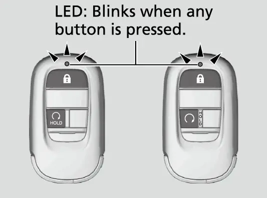
די ווייטקייט וואס עס ארבעט ווערט קלענער ווען געביידעס אדער אנדערע שטערונגען שטייען צווישן אייך און דעם קאר, און עס קען זיך אויך טוישן צוליב דרויסנדיגע עלעקטרישע שטערונגען.
ווען דער מאטאר לויפט, גרייט דער קאר אליין צו די לופט אינעווייניג. ווען עס איז ווארעם דרויסן, ארבעט די קליימעט קאנטראל אין ריסירקולאציע מאדָע. ווען עס איז קאלט דרויסן, צינדט זיך אן דער defroster מיט א מיטלמעסיג ווארעמע טעמפעראטור, און עס צינדן זיך אן דער הינטערשטער דיפאגער, די געהייצטע שפיגלען אויף די טירן, און ביי דער EX די הייצער פון די פארנטיגע זיצן. (דער מאנואל דערמאנט אויך א געהייצטן סטירינג ראד, וואס די EX האט נישט.) דער מאטאר לעשט זיך אליין אויס נאך 10 מינוט לויפן אויפן ארט, אויב איר האט נישט געדריקט צוזאמען דעם ברעמז פעדאל און ENGINE START/STOP. בשעת דעם ערשטן לויפן קענט איר צולייגן נאך 10 מינוט מיט די זעלבע צוויי קנעפלעך: lock, דערנאך דריקן און האלטן remote start. א געלונגענע פארלענגערונג בלינקט אויך זעקס מאל מיט עטליכע דרויסנדיגע לייכטן.
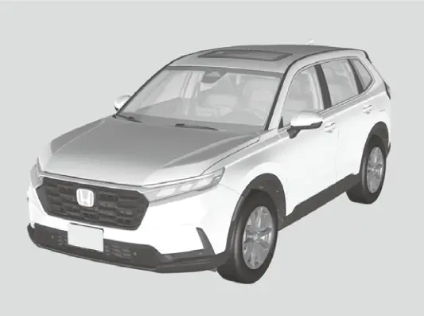
צו אפשטעלן א מאטאר וואס איז אנגעצונדן געווארן פון דער ווייטנס, דריקט און האלט דעם remote start קנעפל איין סעקונדע. אויב ער שטעלט זיך אפ, בלינקען די דרויסנדיגע לייכטן איינמאל. אויב איר זענט צו ווייט, בלינקען די לייכטן נישט און דער מאטאר לויפט ווייטער.
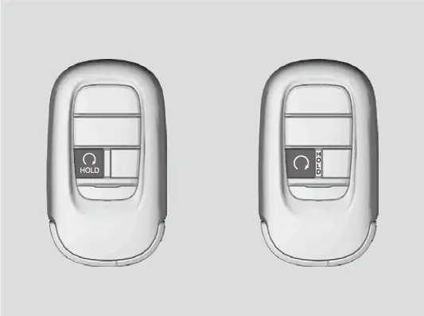
צו ארויספארן, עפנט דעם קאר, זעצט אייך אריין, דריקט און האלט דעם ברעמז פעדאל, און דריקט ENGINE START/STOP. אויב איר נעמט ארויס דעם שיפט פון P פארן דריקן ENGINE START/STOP, שטעלט זיך אפ דער מאטאר. א מאטאר וואס איז אנגעצונדן געווארן פון דער ווייטנס שטעלט זיך אויך אפ אויב א טיר, די האוד אדער דער טעילגעיט ווערט אויפגעשלאסן אדער געעפנט, אויב איר עפנט מיטן אריינגעבויטן שליסל, אויב איר דריקט דעם shift lever release קנעפל (דער קנעפל וואס לאזט ארויס דעם שיפט), אויב דער סעקיוריטי אלארם איז נישט אנגעשטעלט, אויב די באטעריע איז נידעריג, אויב דער אויל דרוק איז נידעריג, אדער אויב די קולענט טעמפעראטור איז גאר הויך.
פארוואס remote start קען נישט ארבעטן
| וואס עס פאדערט | וואס עס שטערט |
|---|---|
| Power mode | נישט אין VEHICLE OFF |
| שיפט פאזיציע | עפעס אנדערש ווי P |
| האוד, טירן, טעילגעיט | האוד אפן אדער עפעס אויפגעשלאסן |
| סעקיוריטי אלארם | נישט אנגעשטעלט |
| וויפיל מאל גענוצט | שוין גענוצט צוויי מאל נאכאנאנד |
| שליסלען | נאך א רעגיסטרירטער פאב אינעווייניג אין קאר |
| צושטאנד פונעם קאר | 12-וואלט באטעריע נידעריג, נידעריגער אויל דרוק, גאר הייסע קולענט, אנטענע קאליע |
| וויאזוי מען האט געעפנט | טיר געעפנט מיטן אריינגעבויטן שליסל |
| סעטינגס | remote start אויסגעלאשן אין Vehicle Settings (A-type meter) |
דער שיפט
די EX האט א געווענליכן shift lever (שיפט הענטל) אויף דער קאנסאל, נישט די קנעפלעך וואס מען ניצט ביים היבריד CR-V. די פאזיציעס זענען P (Park, פארקן), R (Reverse, צוריק), N (Neutral, ניוטראל) און D (Drive, פארן). דער טייל אין מאנואל וועגן ארויספארן אויף א בארג דערמאנט אויך S און L פאזיציעס, אבער אין די מקורות איז נישט באשטעטיגט אז די EX האט באזונדערע S אדער L, דעריבער טשעקט אייער אייגענעם שיפט. קוקט שטענדיג אויפן שיפט פאזיציע אינדיקאטאר אינעם מיטער איידער איר פארט אוועק. דער דיספליי, נישט דאס געפיל אין דער האנט, איז אייער באווייז.
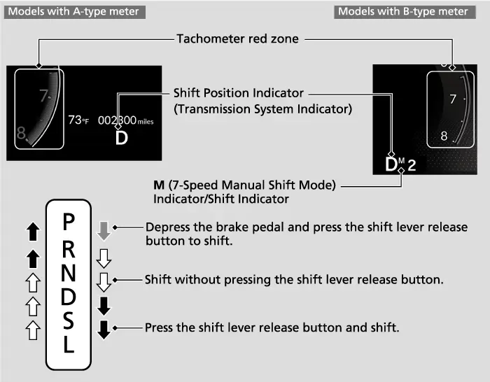
כללים וואס באשיצן די טראנסמישן
ווען איר טוישט צווישן D און R, שטעלט זיך אפ אינגאנצן און האלט דעם ברעמז געדריקט; רירן דעם שיפט איידער דער קאר שטייט אינגאנצן קען שעדיגן די טראנסמישן. רירט קיינמאל נישט דעם שיפט בשעת איר דריקט דעם גאז. אויב דער שיפט וויל זיך נישט רירן בשעת איר האלט דעם release קנעפל, איז דער סדר פאלש: דריקט ערשט דעם ברעמז פעדאל, דערנאך דעם release קנעפל. אין גאר שטארקע קעלט, ארום מינוס 22°F (מינוס 30°C), קען דער דיספליי זיך נעמען א מאמענט צו ווייזן די נייע פאזיציע, דעריבער ווארט און באשטעטיגט פארן פארן.
דער מאנואל רעכנט אויס אויך דריי מנהגים וואס קענען שעדיגן די טראנסמישן: דריקן דעם גאז און ברעמז פעדאל אויף איינמאל, האלטן דעם קאר אויף א בארג ארויף מיטן גאז, און שטעלן די טראנסמישן אין P איידער דער קאר שטייט אינגאנצן.
טראנסמישן אינדיקאטארן
דער shift position indicator (שיפט פאזיציע אינדיקאטאר) ווייזט וואו דער שיפט שטייט. דער transmission system indicator (טראנסמישן סיסטעם ליכטל) איז א ווארענונג: אויב ער בלינקט בשעת איר פארט, אין סיי וועלכע פאזיציע, איז דא א פראבלעם מיט דער טראנסמישן. גיט נישט קיין פלוצלינגע גאז און לאזט עס טשעקן ביי א דילער וואס שנעלער. געדענקט אויך אז דער קאר קען זיך א ביסל רירן אין N ווען דער מאטאר איז קאלט, דעריבער האלט דעם פוס שטארק אויפן ברעמז, און ווען נויטיג ציט אן דעם פארקינג ברעמז.
אויב דער שיפט שטעקט אין P
אויב דער שיפט וויל אמאל נישט ארויסגיין פון P, ניצט דעם shift lock release (באפרייען דעם שיפט שלאס).
באפרייען דעם שיפט שלאס
- ציט אן דעם פארקינג ברעמז.
- שטעלט דעם power mode אויף VEHICLE OFF.
- נעמט ארויס דעם אריינגעבויטן שליסל פונעם keyless remote.
- ווקלט ארום א טוך דעם שפיץ פונעם שליסל, לייגט עס אריין ביים shift lock release שפאלט און הייבט אראפ דאס קליינע דעקל.
- לייגט אריין דעם אריינגעבויטן שליסל אינעם שפאלט און האלט אים ווייטער אריינשטופן.
- בשעת איר שטופט, דריקט דעם shift lever release קנעפל און רירט דעם שיפט צו N.
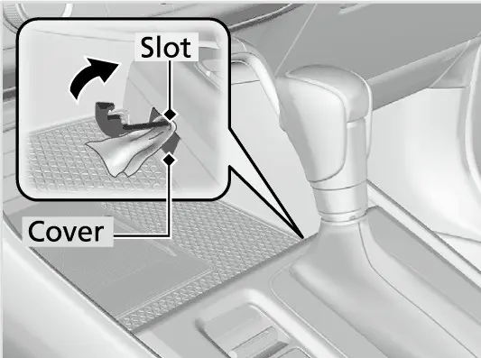
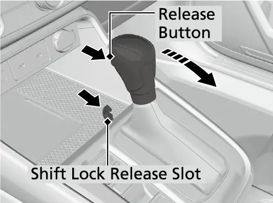
יעצט איז דער שלאס באפרייט, און מען קען דעם קאר שטופן אדער שלעפן לויט די נויט. דאס איז נאר א נויט-אויסוועג. א שיפט וואס שטעקט אין P ווייזט אויף א פעלער, דעריבער לאזט טשעקן דעם שיפט ביי א דילער וואס שנעלער. קאפיטל 27 באהאנדלט אנדערע פראבלעמען.
די CVT און וויאזוי זי פארט
די EX ניצט א CVT, א continuously variable transmission (א טראנסמישן וואס טוישט זיך אן אויפהער). אנשטאט פעסטע גאנגען, טוישט זי איר פארהעלטעניש גלאט איבער א געוויסע ברייט, וואס Honda'ס ספעציפיקאציעס שרייבן אן אלס 2.645 ביז 0.405 (צוריק 2.645 ביז 1.800, fni al drive 5.640)Honda .'ס פיטשער גייד ערקלערט אז דאס לאזט דעם מאטאר שטענדיג לויפן אויף זיין בעסטער גיכקייט פאר שפארעוודיגקייט, און אז א CVT איז לייכטער, קלענער און קען טראגן מער טארק ווי א געווענליכע אויטאמאטישע טראנסמישן. Honda'ס G-Design Shift איז געמאכט צו פארמיידן דאס איבערטריבענע ברומען פונעם מאטאר וואס איז געווענליך ביי אסאך CVTs, דורך בעסער צוזאמפאסן די CVT מיטן torque converter. דאס גאז געבן פילט זיך מער גלייכמעסיג, און דער מאטאר דרייט זיך ווייניגער אויף צו פארן. צוזאמען מיטן 1.5 ליטער טורבא מאטאר, וואס מאכט 190 כוח-פערד ביי 6,000 rpm און 179 lb-ft טארק פון 1,700 ביז 5,000 rpm, ציט ער שטארק ביי טאג-טעגליכע גיכקייטן. קאפיטל 3 באהאנדלט דעם מאטאר אליין.
קריכן
ווי יעדע אויטאמאטישע טראנסמישן, קריכט די CVT פאראויס אין D ווען איר נעמט אראפ דעם פוס פונעם ברעמז. די קריכן-כוח ווערט שטארקער ווען דער מאטאר לויפט שנעלער אויפן ארט, למשל ווען ער איז קאלט. ווען איר שטעלט זיך אפ, האלט דעם ברעמז שטארק געדריקט, אדער לאזט Automatic Brake Hold האלטן דעם קאר (זעט אונטן).
Kickdown און די רויטע זאנע
אויב איר דריקט שנעל אויפן גאז בשעת איר פארט א בארג ארויף, קען די טראנסמישן אראפגיין צו א נידעריגערן פארהעלטעניש, און דער קאר קען גיכער ווערן ווי איר האט גערעכנט. דריקט דעם גאז גלאט, בפרט אויף גליטשיגע וועגן און אין קורוון. אויב איר דרייט דעם מאטאר אריין אין די רויטע זאנע פונעם טאכאמעטער, וואס הייבט זיך אן ביי דער 6,600 rpm רעדליין, קען דער בענזין צופיר אפגעשניטן ווערן און איר קענט פילן א קליינעם שאקל. דאס איז דער מאטאר וואס באשיצט זיך אליין.
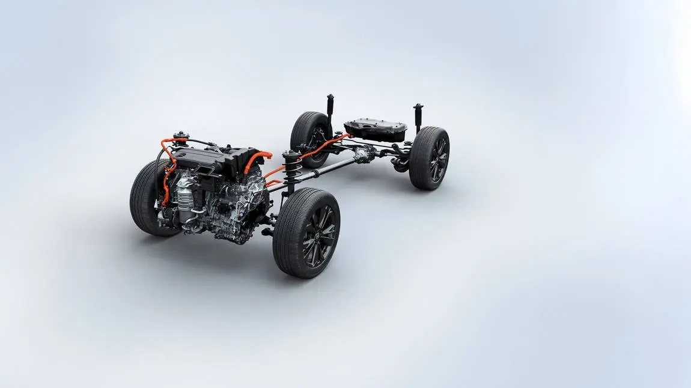
Auto Idle Stop בשעת'ן פארן
ווען איר שטעלט זיך אפ אין D מיטן ברעמז געדריקט, קען Auto Idle Stop (אויטאמאטיש אפשטעלן דעם מאטאר ביים שטיין) אויסלעשן דעם מאטאר צו שפארן בענזין, און דאס גרינע ליכטל צינדט זיך אן. קאפיטל 4 ערקלערט דעם סיסטעם אויספירליך. פארן דרייוון דארפט איר וויסן וויאזוי דער מאטאר קומט צוריק: לאזן דעם ברעמז צינדט אים אן צוריק; ווען Brake Hold איז אקטיוו, צינדט אים אן אנשטאט דעם דריקן דעם גאז. דרייען דעם סטירינג ראד, שיפטן צו R, אפשפיליען דעם סיט בעלט פון דרייווער אדער דריקן דעם Auto Idle Stop OFF קנעפל צינדט אים אויך אן צוריק, אפילו מיטן ברעמז געדריקט. עפנט נישט די האוד בשעת דער מאטאר איז אפגעשטעלט דורך Auto Idle Stop; דעמאלט וועט ער זיך נישט אויטאמאטיש אנצינדן, און איר מוזט ניצן ENGINE START/STOP. SNOW מאדָע האלט Auto Idle Stop אינגאנצן אויסגעלאשן.
Drive Modes (פאר-מאדָעס): NORMAL, ECON און SNOW
די EX האט דריי פאר-מאדָעס, Normal, Econ און Snow, לויט Honda'ס אפיציעלע ספעציפיקאציע טאבעלע. די היבריד מאדעלן האבן פיר אדער פינף מאדָעס, אריינגערעכנט Sport, וואס די EX האט נישט. Honda'ס פיטשער גייד שטעלט דעם שאלטער לעבן די שיפט קאנטראלן. דריקט דעם DRIVE MODE שאלטער צו גיין פון איין מאדָע צום צווייטן; די אויסגעקליבענע מאדָע ווייזט זיך אויפן driver information interface (דער אינפארמאציע דיספליי פארן דרייווער) אינעם מיטער. אין געוויסע פאר-באדינגונגען קען זיך די מאדָע נישט טוישן, און אויב איז דא א קאליע אין א קאר סיסטעם, ווייזט זיך א מעלדונג און מען קען נישט טוישן די מאדָע.
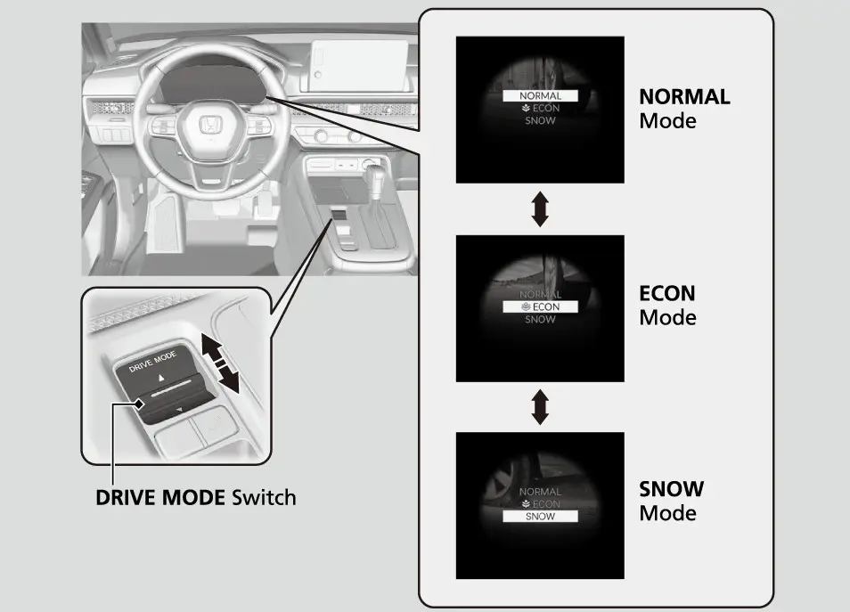
NORMAL מאדָע
NORMAL איז די נארמאלע איינשטעלונג. דער מאנואל שרייבט אז זי גיט דעם בעסטן באלאנס צווישן קאנטראל און באקוועמליכקייט, און Honda'ס פיטשער גייד רופט עס א שיינער באלאנס פון באקוועמליכקייט, כוח און שפארעוודיגקייט. ניצט עס פאר טאג-טעגליך פארן אין שטאט און אויף הייוועי, און ווען איר דארפט פולע, שנעלע רעאקציע, ווי למשל אריינגיין אויף א פולן עקספרעסוועי.
ECON מאדָע
ECON העלפט אייך פארן מער שפארעוודיג מיט בענזין. Honda'ס פיטשער גייד ערקלערט אז סיי די קליימעט קאנטראל און סיי דער drive-by-wire גאז ארבעטן מער רואיג. דער מאנואל זאגט ערליך דעם פרייז: די קליימעט קאנטראל איז ווייניגער עפעקטיוו און דער קאר ווערט לאנגזאמער גיך. ווען די קליימעט קאנטראל ארבעט, מאכט ECON אויך לענגער די צייט וואס דער מאטאר בלייבט אפגעשטעלט בשעת Auto Idle Stop. ניצט ECON פאר רואיגע פארן צו דער ארבעט און אין שטופ-און-שטיי טראפיק. אויף א גאר הייסן טאג, אדער ווען איר דארפט כוח אריינצוגיין אין טראפיק, טוישט צוריק צו NORMAL.
SNOW מאדָע
SNOW גיט די מערסטע קאנטראל אויף שניייגע וועגן דורך די איינשטעלונגען פונעם פאוערטרעין. Honda'ס פיטשער גייד ערקלערט אז דער גאז רעאגירט גלאטער, וואס מאכט ווייניגער אז די רעדער זאלן זיך אויסדרייען. אין SNOW מאדָע בלייבט Auto Idle Stop אויסגעלאשן, נישט קוקנדיג אויף זיין OFF קנעפל, און טוישן צו SNOW בשעת דער מאטאר איז אפגעשטעלט דורך Idle Stop צינדט אים אן צוריק.
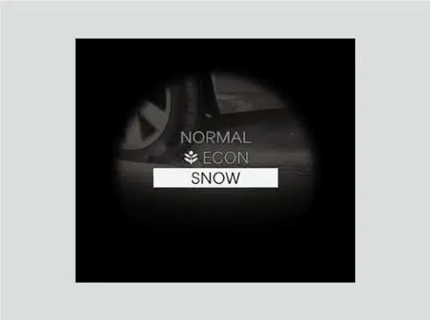
אין וועלכע מאדָע דער קאר הייבט אן
מאדָע ביים נעקסטן אנצינדן
| מאדָע ווען איר לעשט אויס | מאדָע ביים נעקסטן אנצינדן |
|---|---|
| NORMAL | NORMAL |
| SNOW | NORMAL |
| ECON | ECON |
אויב איר ווילט ECON יעדן טאג, קלייבט עס אויס איינמאל און עס בלייבט. נאך א שניייגן טאג, געדענקט צו קלייבן SNOW נאכאמאל דעם נעקסטן אינדערפרי.
עלעקטרישער פארקינג ברעמז
איר קענט אנציען דעם עלעקטרישן פארקינג ברעמז סיי ווען דער קאר האט באטעריע כוח, אין יעדן power mode. ציט ארויף דעם שאלטער לייכט אבער אינגאנצן. דאס ליכטל אינעם שאלטער צינדט זיך אן, און דאס רויטע ליכטל פון פארקינג ברעמז און ברעמז סיסטעם צינדט זיך אן אינעם מיטער. איר קענט הערן א מאטארל ביי די הינטערשטע רעדער און פילן אז דער ברעמז פעדאל רירט זיך א ביסל; ביידע זענען נארמאל. אויב די 12-וואלט באטעריע ווערט ליידיג, קען מען דעם פארקינג ברעמז נישט אנציען און נישט אפלאזן (זעט קאפיטל 20).
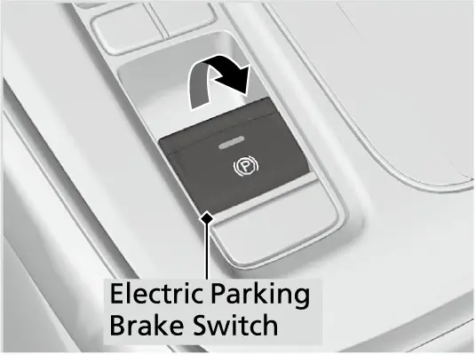
אפלאזן מיט דער האנט
צו אפלאזן מיטן שאלטער, מוז דער power mode זיין ON. דריקט דעם ברעמז פעדאל, דערנאך דריקט אראפ דעם שאלטער. דאס ליכטל אינעם שאלטער און דאס רויטע ליכטל גייען ביידע אויס. אפלאזן מיטן שאלטער העלפט דעם קאר אנהייבן פארן לאנגזאם און גלאט ווען ער שטייט אראפ אויף א שטאציגע גאס.
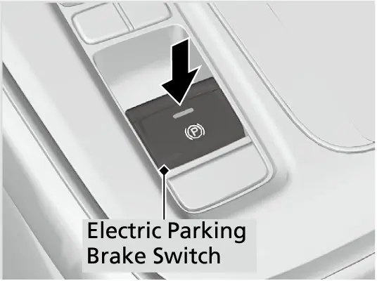
אויטאמאטיש אפלאזן
לייכט דריקן דעם גאז לאזט אפ דעם פארקינג ברעמז אויטאמאטיש, כל זמן דער סיט בעלט פון דרייווער איז צוגעשפיליעט, דער מאטאר לויפט און דער שיפט איז נישט אין P אדער N. דאס איז דער גרינגער וועג אוועקצופארן א בארג ארויף אדער אין א טראפיק דזשעם. א בארג ארויף קען עס פאדערן א ביסל מער גאז. אויב דער פארקינג ברעמז לאזט זיך נישט אפ אויטאמאטיש, לאזט אים אפ מיט דער האנט.
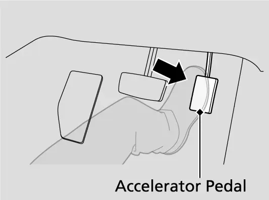
ווען אויטאמאטיש אפלאזן איז אפגעשטעלט
| וועלכעס ליכטל איז אן | רעזולטאט |
|---|---|
| Malfunction indicator lamp (טשעק ענדזשין ליכטל) | קען זיך נישט אויטאמאטיש אפלאזן |
| וועלכעס ליכטל איז אן | רעזולטאט |
|---|---|
| Transmission system indicator | קען זיך נישט אויטאמאטיש אפלאזן |
| געלע ברעמז סיסטעם ליכטל | קען זיך אפשר נישט אויטאמאטיש אפלאזן |
| VSA ליכטל | קען זיך אפשר נישט אויטאמאטיש אפלאזן |
| ABS ליכטל | קען זיך אפשר נישט אויטאמאטיש אפלאזן |
| SRS (עירבעג) ליכטל | קען זיך אפשר נישט אויטאמאטיש אפלאזן |
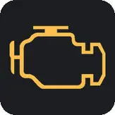
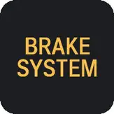
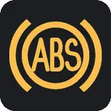
אויטאמאטיש אנציען
דער פארקינג ברעמז ציט זיך אויך אן אויטאמאטיש אין געוויסע מצבים: ווען Brake Hold אדער adaptive cruise control (ACC) האט געהאלטן דעם קאר שטיין מער ווי 10 מינוט, ווען דער סיט בעלט פון דרייווער ווערט אפגעשפיליעט בשעת אזא האלטן, ווען דער מאטאר ווערט אויסגעלאשן (נישט דורך Auto Idle Stop) בשעת אזא האלטן, און ווען עס איז דא א פראבלעם מיט Brake Hold בשעת ער האלט.
איר קענט אויך איינשטעלן אז דער פארקינג ברעמז זאל זיך אנציען יעדעס מאל וואס איר שטעלט דעם power mode אויף VEHICLE OFF.
אנצינדן אדער אויסלעשן די אויטאמאטישע פארקינג ברעמז פונקציע
- מיטן power mode אויף ON, שטעלט די טראנסמישן אין P.
- אן דריקן דעם ברעמז פעדאל, ציט ארויף און לאזט אפ דעם פארקינג ברעמז שאלטער, און טשעקט אז דאס רויטע ליכטל צינדט זיך אן.
- ציט ארויף און האלט דעם שאלטער ביז איר הערט א ביפ, דערנאך לאזט אפ.
- אין משך פון דריי סעקונדעס, ציט ארויף און האלט דעם שאלטער נאכאמאל ביז איר הערט דעם סיום-קלאנג, דערנאך לאזט אפ.
- צוויי ביפס מיינט אז די פונקציע איז יעצט אן; איין ביפ מיינט אז זי איז יעצט אויס.
אפילו ווען די פונקציע איז אן, באשטעטיגט שטענדיג אז דאס רויטע ליכטל ברענט ווען איר פארקט.
קאר וואש און שלעפן
פאר א קאר וואש מיט א קאנוועיער (וואס ציט דעם קאר), אדער ווען מען שלעפט דעם קאר, מוז דער פארקינג ברעמז בלייבן אפגעלאזט. ווען די אויטאמאטישע פונקציע איז אן, ניצט דעם צייטווייליגן סדר אונטן. די איינשטעלונג אליין טוישט זיך נישט און ארבעט ווידער ביים נעקסטן אנצינדן.
צייטווייליג אפלאזן פאר א קאנוועיער קאר וואש אדער שלעפן
- לעשט אויס adaptive cruise control און Automatic Brake Hold.
- שטעלט אפ דעם קאר מיטן ברעמז פעדאל; Honda'ס פיטשער גייד זאגט צו שיפטן צו Neutral.
- שטעלט דעם power mode אויף VEHICLE OFF, און אין משך פון צוויי סעקונדעס דריקט אראפ דעם פארקינג ברעמז שאלטער.
Automatic Brake Hold (אויטאמאטישע ברעמז-האלט)
Automatic Brake Hold האלט די ברעמזן אן נאכדעם וואס איר נעמט אראפ דעם פוס פונעם פעדאל, ביז איר דריקט דעם גאז. עס איז פערפעקט ביי לאנגע רויטע לייכטן און אין שווערן טראפיק. צו אנצינדן, שפיליעט צו דעם סיט בעלט, צינדט אן דעם מאטאר און דריקט דעם Brake Hold קנעפל. דאס automatic brake hold system ליכטל צינדט זיך אן. דער סיסטעם געדענקט אייער לעצטע אן אדער אויס אויסוואל יעדעס מאל וואס איר שפיליעט זיך צו און צינדט אן.
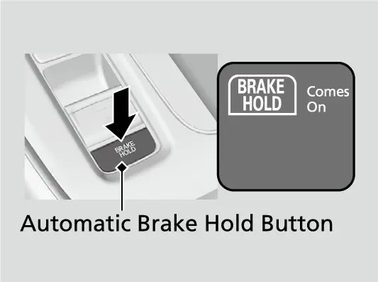
צו ניצן, דריקט דעם ברעמז און שטעלט זיך אפ אינגאנצן, מיטן שיפט אין סיי וועלכע פאזיציע אחוץ P אדער R. דאס automatic brake hold ליכטל צינדט זיך אן, און דער קאר ווערט געהאלטן ביז 10 מינוט. האלט דעם פוס אויפן ברעמז ביז דאס ליכטל ווייזט זיך, און ערשט דעמאלט נעמט אים אראפ; אויב איר נעמט אראפ צו פרי, קען דער קאר קריכן. צו אוועקפארן, דריקט דעם גאז מיטן שיפט אין סיי וועלכע פאזיציע אחוץ P אדער N. דאס האלט-ליכטל גייט אויס, אבער דער סיסטעם בלייבט אן פאר'ן נעקסטן אפשטעל. איר קענט הערן א גערויש פון ארבעט אויב דער קאר רירט זיך בשעת דאס האלטן איז אקטיוו.
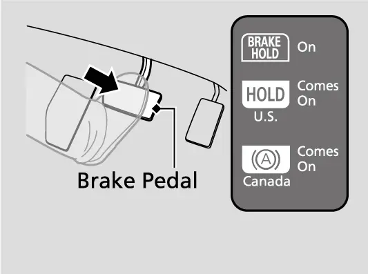
דער סיסטעם ווערט אפגעשטעלט ווען איר ציט אן דעם פארקינג ברעמז, אדער ווען איר דריקט דעם ברעמז און שיפט צו P אדער R. אויב דאס האלטן דויערט מער ווי 10 מינוט, אויב איר שפיליעט אויף דעם סיט בעלט, אויב דער מאטאר ווערט אויסגעלאשן אדער אויב עס איז דא א פעלער, שטעלט זיך אפ דער סיסטעם און דער פארקינג ברעמז ציט זיך אן אויטאמאטיש. בשעת דער סיסטעם איז אן, קענט איר נאך אלץ פארקן און אויסלעשן דעם מאטאר ווי געווענליך.
צו אויסלעשן Brake Hold ווען נאר דאס סיסטעם ליכטל ברענט, דריקט דעם קנעפל. אויב דער קאר האלט אין יענעם מאמענט, דריקט דעם קנעפל מיטן ברעמז פעדאל געדריקט; ביידע ליכטלעך גייען אויס. לעשט עס אויס פאר אן אויטאמאטישן קאר וואש. אויב איר שפיליעט אויף אדער לעשט אויס דעם מאטאר בשעת עס איז אן, לעשט עס זיך אויס, אבער עס צינדט זיך אן צוריק אויטאמאטיש ווען איר שפיליעט זיך צו און צינדט אן נאכאמאל.
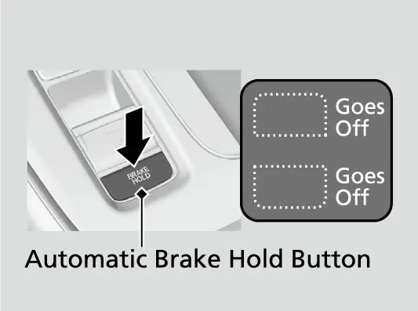
Hill Start Assist און Hill Descent Control (בארג הילף)
Hill Start Assist (הילף ביים ארויספארן אויף א בארג)
Hill Start Assist ארבעט אויטאמאטיש. עס האלט דעם ברעמז א קורצע רגע בשעת איר רירט דעם פוס פונעם ברעמז צום גאז, כדי דער קאר זאל נישט צוריקראלן. עס ארבעט ווען דער קאר שטייט א בארג ארויף אין D, אדער א בארג אראפ אין R, און אפילו ווען VSA איז אויסגעלאשן. עס קען נישט פארמיידן ראלן אויף א גאר שטאציגן אדער גליטשיגן שיפוע, עס ארבעט נישט אויף קליינע שיפועים, און עס איז נישט קיין ערזאץ פאר'ן פארקינג ברעמז. א פארבונדענע Starting Assist Brake Function האלט דעם ברעמז א קורצע רגע ווען דער מאטאר צינדט זיך אן צוריק נאך Auto Idle Stop, כדי דער קאר זאל זיך נישט אומגעריכט רירן אויף א שיפוע.
Hill Descent Control (קאנטראל ביים אראפפארן פון א בארג)
Hill Descent Control, סטאנדארט ביי אלע CR-V מאדעלן, העלפט ווען דאס ברעמזן פונעם מאטאר אליין איז נישט גענוג אויף א שטאציגן בארג אראפ. עס האלט א גלייכע גיכקייט אן דעם וואס איר דארפט דריקן דעם ברעמז.
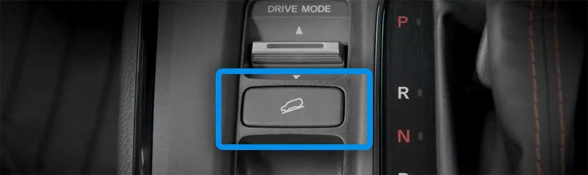
ניצן Hill Descent Control
- אונטער בערך 12 mph (20 km/h), דריקט דעם Hill Descent Control קנעפל; דאס ווייסע ליכטל ווייזט standby (גרייט).
- פארט א בארג אראפ צווישן בערך 2 און 12 mph (3 און 20 km/h) מיט ביידע פעדאלן אפגעלאזט; דער סיסטעם ווערט אקטיוו און דאס ליכטל ווערט גרין.
- צו טוישן די איינגעשטעלטע גיכקייט, דריקט דעם גאז אדער ברעמז; די גיכקייט ביי וועלכער איר לאזט אפ דעם פעדאל ווערט די נייע איינשטעלונג.
- צו אויסלעשן דעם סיסטעם, דריקט נאכאמאל דעם קנעפל.
די ברעמז לייכטן צינדן זיך אן אויטאמאטיש בשעת עס ארבעט. דער סיסטעם קען נישט ארבעטן אויף א לייכטן שיפוע, און עס קען ווערן אקטיוו אויף אומגלייכער ערד ווען דער קאר נייגט זיך, אפילו ווען איר פארט נישט אראפ. ציטערן פונעם פעדאל און א גערויש פונעם סיסטעם בשעת'ן ארבעטן זענען נארמאל.
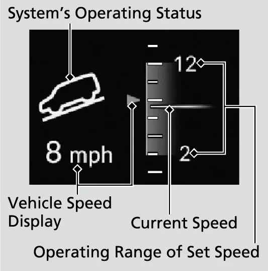
דער גיכקייט דיספליי ווייזט די איינגעשטעלטע גיכקייט אין ווייס און די יעצטיגע גיכקייט אין גרוי, און בלינקט אויב איר פארט שנעלער ווי דער ארבעטס-ברייט. דער סיסטעם לעשט זיך אויס אויטאמאטיש ביי בערך 37 mph (60 km/h) און יעדעס מאל וואס איר לעשט אויס דעם מאטאר. לאנגע איבערגעחזרטע באנוץ קען אנהייצן די ברעמזן און אים צייטווייליג אריינשטעלן אין standby.
סטאביליטעט, טרעקשן און קאנטראל סיסטעמען
VSA(Vehicle Stability Assist, סטאביליטעט הילף)
VSA איז Honda'ס עלעקטראנישע סטאביליטעט קאנטראל, און עס נעמט אריין טרעקשן קאנטראל. עס האלט דעם קאר סטאביל ווען ער דרייט זיך מער אדער ווייניגער ווי איר האט געוואלט, און העלפט האלטן דעם אנכאפ אויף גליטשיגע ערטער דורך רעגולירן דעם מאטאר כוח און ברעמזן איינצלנע רעדער. ווען VSA ארבעט, בלינקט זיין ליכטל, דער מאטאר קען נישט רעאגירן צום גאז, און איר קענט הערן די ברעמז הידראוליק. א מאטאר-גערויש פונעם מאטאר אפטייל בשעת סיסטעם טשעקס נאכן אנצינדן איז נארמאל.
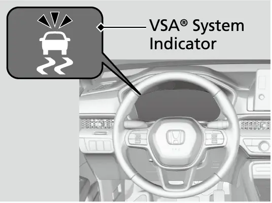
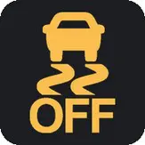
אויב דאס VSA ליכטל צינדט זיך אן און בלייבט אן בשעת'ן פארן, לאזט דעם קאר גלייך טשעקן ביי א דילער. VSA קען נישט ריכטיג ארבעטן מיט געמישטע טייער גרייסן אדער טיפן, דעריבער האלט די זעלבע גרייס און טיפ אויף אלע רעדער מיטן באשטימטן דרוק (קאפיטל 16). נאכדעם וואס די 12-וואלט באטעריע ווערט צוריק אנגעשלאסן, קענען זיך אנצינדן די VSA, געלע ברעמז סיסטעם, ACC, TPMS און safety support ליכטלעך מיט א מעלדונג; פארט א קורצע שטרעקע העכער 12 mph (20 km/h) און יעדעס זאל אויסגיין. אויב איינס בלייבט אן, גייט צום דילער.
איר קענט טיילווייז אויסלעשן VSA דורכן driver information interface, אונטער VSA Mode אויפן A-type meter, אנשטאט א באזונדערן קנעפל. ברעמזן און דרייען אין קורוון בלייבן נארמאל, אבער טרעקשן קאנטראל איז שוואכער און די רעדער קענען זיך מער אויסדרייען ביי נידעריגע גיכקייט. דאס קען העלפן ארויסצוקריכן פון נישט-טיפע בלאטע אדער פרישן שניי, אבער פרובירט עס נאר אויב איר קענט נישט ארויס מיט VSA אן. צינדט עס צוריק אן גלייך ווען איר זענט ארויס. VSA צינדט זיך אן צוריק אויטאמאטיש יעדעס מאל וואס איר צינדט אן דעם מאטאר.
Agile Handling Assist
Agile Handling Assist (הילף צו קאנטראלירן אין קורוון) איז סטאנדארט ביי דער EX. עס ברעמזט לייכט איינצלנע פארנטיגע און הינטערשטע רעדער בשעת איר דרייט, און שטיצט די סטאביליטעט אין א קורוו. איר קענט הערן א גערויש פונעם מאטאר אפטייל; דאס איז נארמאל. עס ארבעט נישט בשעת דאס VSA ליכטל בלייבט אן. ווי VSA, קען עס נישט איבערקומען די געזעצן פון פיזיק.
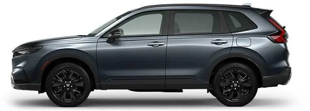
די suspension (פעדערונג) איז MacPherson strut פארנט און multi-link הינטן. דער מאנואל דערמאנט אז SUV קארס קערן זיך איבער גרינגער ווי געווענליכע קארס: נעמט קורוון לאנגזאמער, פארמיידט שארפע דרייען און פלוצלינגע באוועגונגען, טוישט נישט דעם קאר אויף אן אופן וואס הייבט אויף זיין שווערקייט-צענטער, און טראגט נישט קיין שווערע לאסט אויפן דאך.
Front-wheel drive און Real Time AWD
Front-wheel drive (פארנט-ראד דרייוו) איז סטאנדארט ביי דער EX; Real Time AWD (אלע-רעדער דרייוו) מיט Intelligent Control System איז צו באקומען, דעריבער טשעקט אייער אייגענעם קאר. מיט AWD גייט כוח אויטאמאטיש צו די הינטערשטע רעדער ווען די פארנטיגע רעדער פארלירן אנכאפ. Honda'ס פיטשער גייד לייגט צו אז עס שיקט אויך כוח הינטן פון פאראויס ביים גאז געבן און ארויפפארן, און פארטיילט טארק פון פארנט צו הינטן אין קורוון. איר דארפט פארט די זעלבע אכטונג ביים גאז געבן, דרייען און ברעמזן ווי אין א קאר מיט צוויי-ראד דרייוו.
ברעמזן, סטירינג און אכטונג ביים פארן
די EX האט דיסק ברעמזן ביי אלע פיר רעדער: 12.3-אינטש ווענטילירטע פארנט און 12.2-אינטש פולע הינטן. Brake assist (ברעמז הילף) לייגט צו ברעמז-כוח ווען איר דריקט שטארק אין א נויט-פאל. ABS האלט אפ די רעדער פון פארשפארן ווערן כדי איר זאלט קענען דרייען, און איר electronic brake distribution (EBD, עלעקטראנישע ברעמז פארטיילונג) באלאנסירט פארנט און הינטן ברעמזן לויט די לאסט. פאמפט קיינמאל נישט דעם פעדאל: דריקט שטארק און דרייט. א קלאפנדיגער פעדאל, ציטערן פונעם קאר און מאטאר-גערויש זענען נארמאל ווען ABS ארבעט. ABS הערט אויף צו ארבעטן אונטער 6 mph (10 km/h), און עס מאכט נישט קירצער דעם ברעמז-אפשטאנד; אויף שאטער, שניי אדער מיט טשעינס קען דער קאר דארפן מער אפשטאנד זיך אפצושטעלן. אויב דאס ABS ליכטל צינדט זיך אן בשעת'ן פארן, ארבעט נארמאל ברעמזן נאך אלץ, אבער לאזט דעם קאר גלייך טשעקן ביי א דילער. קאפיטל 17 באהאנדלט די ברעמזן אויספירליך.
א זשומענדיגער גערויש פונעם מאטאר אפטייל ווען איר דריקט דעם ברעמז איז נארמאל. אן אן-אויפהער מעטאלישער קראצנדיגער גערויש מיינט אז דער wear indicator (פארנוץ-אנווייזער) רירט אן דעם ראטאר און די ברעמז פעדס דארפן געטוישט ווערן. נאך טיפע וואסער, טשעקט די ברעמזן און טרוקנט זיי דורך לייכט דריקן דעם פעדאל עטליכע מאל. לאזט נישט רוען דעם פוס אויפן פעדאל; עס פארנוצט די פעדס, מאכט שוואכער די ברעמזן און צעמישט די דרייווערס הינטער אייך.
די סטירינג איז Dual Pinion Assist עלעקטרישע פאוער סטירינג, בערך 2.4 דרייען פון איין עק צום צווייטן, מיט א 37.3 פיס דרייאונג-דורכמעסער פון קערב צו קערב. האלטן דעם סטירינג ראד אויף פולן דריי, אדער אים דרייען איבער און איבער ביי גאר נידעריגע גיכקייט, הייצט אן דעם סיסטעם; דעמאלט באגרעניצט ער די הילף און דאס ראד ווערט שווערער ביז עס קילט זיך אפ. דאס איבערחזרן קען שעדיגן דעם סיסטעם.
אכטונג בשעת'ן פארן
| מצב | כלל |
|---|---|
| אין באוועגונג | קיינמאל נישט קלייבן N; איר פארלירט מאטאר-ברעמזן און גאז |
| אין באוועגונג | קיינמאל נישט קלייבן ACCESSORY; דער מאטאר שטעלט זיך אפ און מען פארלירט סטירינג און ברעמז הילף |
| ערשטע 600 מייל (1,000 km) | קיין פלוצלינגע גאז און קיין פול גאז ביים ארויספארן |
| ערשטע 200 מייל (300 km), אדער נייע פעדס אדער ראטארס | פארמיידט שטארק ברעמזן |
| דאך רעק (Honda אקסעסארי) | מאקסימום 165 lbs (75 kg) |
| וואסער | פארמיידט טיפע וואסער און פארפלייצטע וועגן |
| שטארקער קלאפ פון אונטן | שטעלט זיך אפ זיכער און טשעקט פאר שאדן אדער ליקס |
שלעפן א טרעילער
Honda'ס ספעציפיקאציעס און דער מאנואל שטעלן די גרעניץ אויף 1,500 lbs (680 kg) פאר'ן טרעילער, זיין לאסט און אלעס וואס איז אין אים אדער אויף אים. שווערערע לאסטן קענען שטארק שאטן די קאנטראל און שעדיגן דעם מאטאר און דרייווטרעין. דער tongue weight (די וואג וואס דריקט אויפן היטש) דארף זיין בערך 10 פראצענט פון דער גאנצער טרעילער וואג. צו פיל מאכט שוואכער דעם אנכאפ פון די פארנטיגע טייערס און די סטירינג קאנטראל; צו ווייניג קען מאכן דעם טרעילער שאקלען זיך אהין און צוריק. הייבט אן מיט לאדן 60 פראצענט צום פארנט פונעם טרעילער און 40 פראצענט צום הינטן, דערנאך פאסט צו. די גאנצע לאסט גרעניץ פונעם קאר איז 850 lbs (385 kg), אריינגערעכנט פאסאזשירן, לאסט, אקסעסאריס און tongue weight. גייט קיינמאל נישט העכער דעם GVWR אדער GAWR אויפן לעיבל ביי דער טיר פון דרייווער. טשעקט די וואג ביי א פובליק וואג אויב איר קענט. פארמיידט שלעפן די ערשטע 600 מייל (1,000 km).
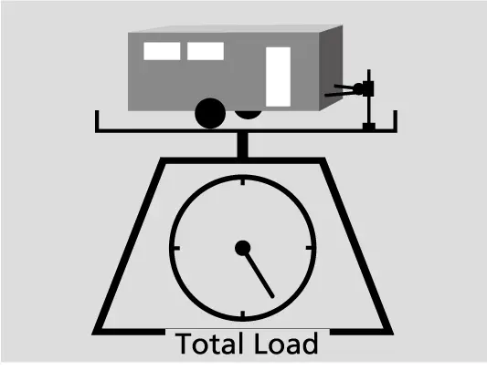
ניצט אן אפראבירטן היטש וואס איז צוגעשרויפט צום אונטערשטן טייל פונעם קאר, און ניצט שטענדיג safety chains (זיכערהייט קייטן), לויז גענוג צו דרייען אבער נישט שלעפנדיג אויף דער ערד. די ברעמזן פונעם טרעילער מוזן ארבעטן עלעקטראניש; שליסט זיך קיינמאל נישט אן אינעם הידראולישן סיסטעם פונעם קאר, וואס מאכט שוואכער די ברעמזן. אין געוויסע ערטער פאדערט מען ספעציעלע שפיגלען פאר שלעפן. Honda רעקאמענדירט א Honda wiring harness און קאנווערטער וואס ווערט אריינגעשטעלט ביים דילער; דער שטעקער פאר די טרעילער לייכטן איז הינטער דעם לינקן זייט-פאנעל אינעם לאסט-פלאץ. קאפיטל 22 באהאנדלט לאדן לאסט.
פאר יעדן שלעפן
- באשטעטיגט אז אלע וואגן זענען אין די גרעניצן און די לאסט אויפן טרעילער איז פעסט צוגעבונדן.
- שליסט פעסט צו דעם היטש, די safety chains און אנדערע טיילן.
- טשעקט אז די לייכטן און ברעמזן פונעם טרעילער ארבעטן, און אז די טרעילער טייערס, אריינגערעכנט זיין ספעיר, האבן ריכטיגן לופט.
- לעשט אויס Auto Idle Stop מיט זיין OFF קנעפל, ווייל די טרעילער וואג קען שאטן דאס ברעמזן אויב דער מאטאר שטעלט זיך אפ אויף א בארג.
אויפן וועג, פארט נישט שנעלער ווי 62 mph (100 km/h), אדער 55 mph (88 km/h) מיט א טרעילער מיט פעסטע ווענט ווי א קעמפער, וואס קען שאקלען ביי העכערע גיכקייטן. האלט אייך צו די אנגעשריבענע גיכקייט גרעניצן פאר טרעילערס, ניצט D אויף גלייכע וועגן, דרייט לאנגזאמער און ברייטער, לאזט מער ברעמז-אפשטאנד, און פארמיידט פלוצלינגע ברעמזן אדער דרייען. ווען איר פארקט, לייגט קלעצער ביי יעדן טרעילער טייער. Honda רעקאמענדירט צו טראגן פול-גרייס ספעירס סיי פארן קאר און סיי פאר'ן טרעילער, ווייל דער קליינער ספעיר קען מאכן שוואכער די סטאביליטעט, און אפצושליסן דעם טרעילער פארן טוישן א פלאטן טייער.
אפטע פראגעס
פראגע: קען איך לאזן דעם קאר לויפן מיט Brake Hold אן בשעת איך גיי ארויס אויף א רגע?
ענטפער: ניין. לאזט קיינמאל נישט איבער דעם קאר בשעת Brake Hold האלט. שטעלט אים אין P און ציט אן דעם פארקינג ברעמז; דער פארקינג ברעמז ציט זיך אויך אן אויטאמאטיש אויב איר שפיליעט אויף דעם סיט בעלט בשעת'ן האלטן.
פראגע: פארוואס ארבעט מיין remote start נאר צוויי מאל?
ענטפער: דער מאנואל באגרעניצט remote start צו צוויי מאל נאכאנאנד. צינדט אן דעם מאטאר נארמאל מיט ENGINE START/STOP כדי צו ריסעטן די ציילונג.
פראגע: בלייבט SNOW מאדָע אן נאכן פארקן?
ענטפער: ניין. אויב איר לעשט אויס אין SNOW אדער NORMAL, הייבט דער קאר אן אין NORMAL דאס נעקסטע מאל. נאר ECON ווערט געדענקט.
פראגע: פארוואס לאזט זיך נישט אפ דער פארקינג ברעמז ווען איך דריק דעם גאז?
ענטפער: טשעקט אז דער סיט בעלט פון דרייווער איז צוגעשפיליעט, דער מאטאר לויפט און דער שיפט איז נישט אין P אדער N. עס קען זיך אויך נישט אויטאמאטיש אפלאזן ווען דאס טשעק ענדזשין אדער טראנסמישן ליכטל איז אן. לאזט עס אפ מיט דער האנט מיטן ברעמז געדריקט.
פראגע: ווען זאל איך אויסלעשן VSA?
ענטפער: נאר צו ארויסקריכן פון נישט-טיפע בלאטע אדער פרישן שניי, נאכדעם וואס עס איז נישט געגאנגען מיט VSA אן. צינדט עס צוריק אן גלייך; עס צינדט זיך אויך אן ביי יעדן מאטאר אנצינדן.
פראגע: פארוואס האט Hill Descent Control זיך אליין אויסגעלאשן?
ענטפער: עס לעשט זיך אויס ביי בערך 37 mph און ביי יעדן אויסלעשן פונעם מאטאר, און לאנגע באנוץ קען אנהייצן די ברעמזן און עס צייטווייליג אריינשטעלן אין standby.
הויפט פונקטן
- הייבט אן מיטן פארקינג ברעמז אנגעצויגן, דעם שיפט אין P און דעם ברעמז געדריקט, דערנאך איין קורצער דריק אויף ENGINE START/STOP.
- שטעלט זיך אפ אינגאנצן און האלט דעם ברעמז פארן שיפטן צווישן D און R, און שיפט קיינמאל נישט בשעת איר דריקט דעם גאז.
- די EX האט דריי פאר-מאדָעס; ECON ווערט געדענקט ביים נעקסטן אנצינדן, NORMAL און SNOW קערן זיך צוריק צו NORMAL.
- נעמט אראפ דעם פוס פונעם ברעמז ערשט נאכדעם וואס דאס Brake Hold ליכטל ווייזט זיך, און ניצט קיינמאל נישט Brake Hold צו פארקן.
- Hill Descent Control ארבעט צווישן בערך 2 און 12 mph און לעשט זיך אויס ביי בערך 37 mph אדער ביים אויסלעשן.
- לעשט אויס VSA נאר צו ארויסקריכן ווען איר שטעקט, און האלט אלע פיר טייערס די זעלבע גרייס, טיפ און דרוק.
- שלעפט נישט מער ווי 1,500 lbs, האלט דעם tongue weight נאנט צו 10 פראצענט און פארט נישט שנעלער ווי 62 mph.
- פארמיידט פול גאז און שלעפן די ערשטע 600 מייל, און שטארק ברעמזן די ערשטע 200 מייל.